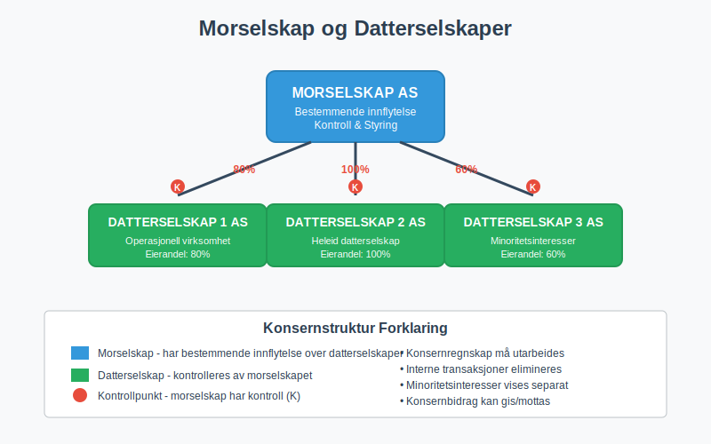
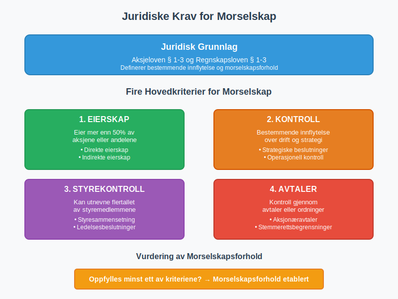
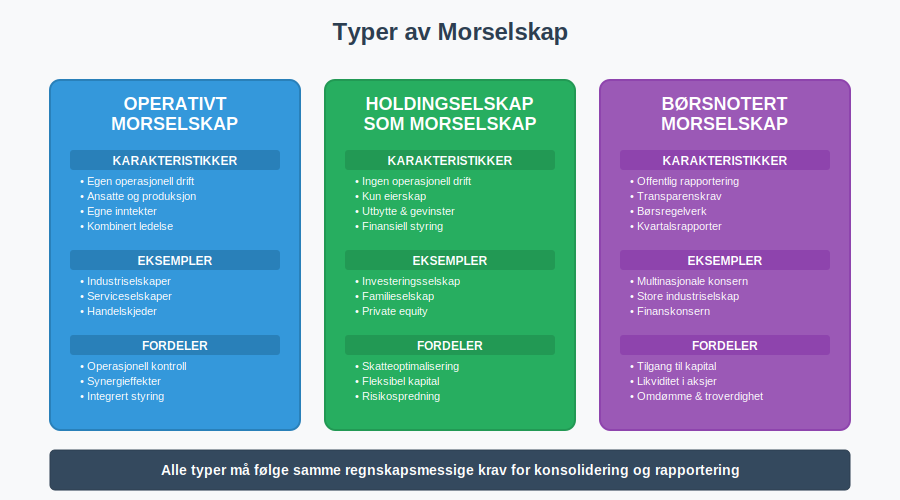
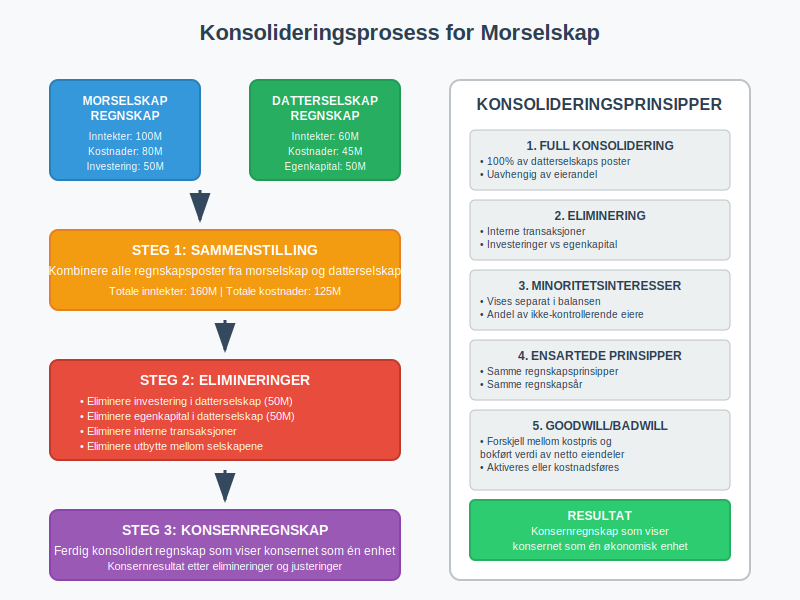
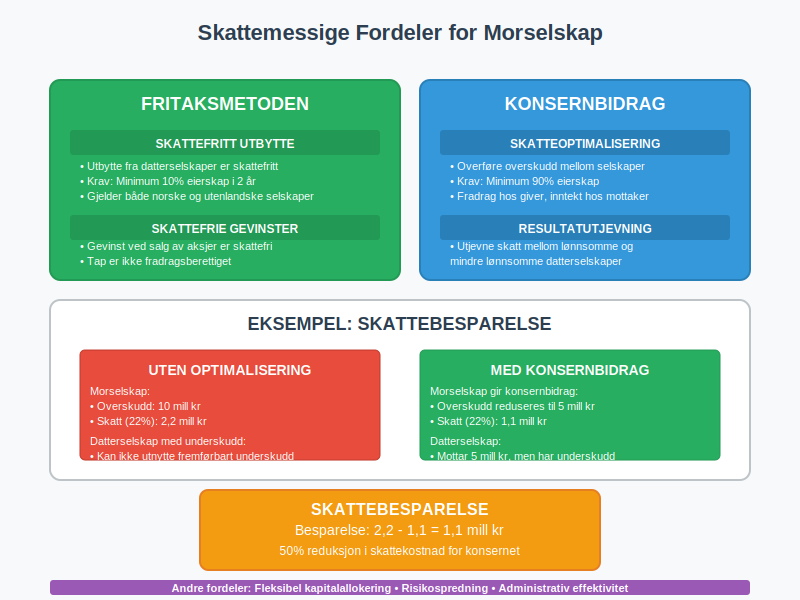
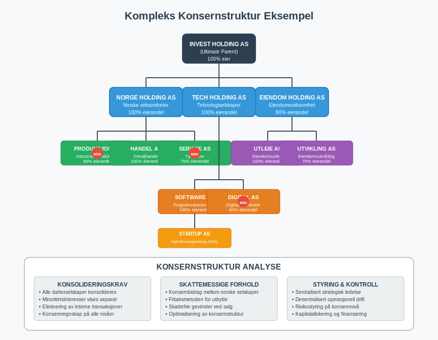
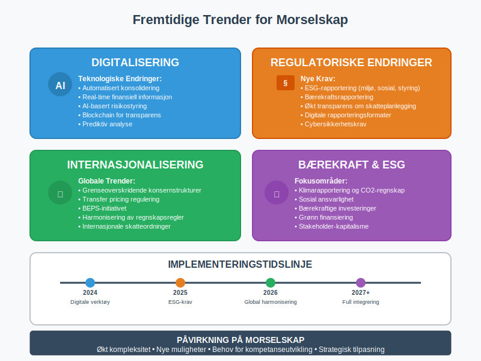

Et morselskap er et selskap som har bestemmende innflytelse over ett eller flere andre selskaper (datterselskaper) gjennom eierskap av aksjer eller andeler. Morselskapet står på toppen av en konsernstruktur og har kontroll over datterselskapenes strategiske beslutninger.

Definisjon av Morselskap
Et morselskap defineres som et selskap som:
- Eier mer enn 50% av aksjene eller andelene i et annet selskap
- Har bestemmende innflytelse over et annet selskaps drift og strategi
- Kan utnevne flertallet av styremedlemmene i datterselskapet
- Har kontroll over datterselskapet gjennom avtaler eller andre ordninger
Juridisk Grunnlag
Begrepet morselskap er definert i aksjeloven § 1-3 og regnskapsloven § 1-3. Et selskap regnes som morselskap når det har bestemmende innflytelse over et annet selskap, uavhengig av eierandel.

Typer av Morselskap
Operativt Morselskap
Et operativt morselskap driver egen virksomhet i tillegg til å eie datterselskaper:
- Har egen drift og ansatte
- Genererer egne inntekter fra operasjonell virksomhet
- Kombinerer operasjonell ledelse med eierstyring
- Vanlig i industriselskaper og serviceselskaper
Holdingselskap som Morselskap
Et holdingselskap fungerer som rent morselskap:
- Ingen operasjonell drift - kun eierskap
- Inntekter kommer fra utbytte og kapitalgevinster
- Fokus på finansiell styring og investeringer
- Ofte brukt for skatteoptimalisering
Børsnotert Morselskap
Børsnoterte morselskaper har særlige krav:
- Offentlig rapportering av konsernresultater
- Transparens overfor aksjonærer og marked
- Compliance med børsregelverk
- Kvartalsrapportering og årsrapporter

Eierskap og Kontroll
Eierandeler og Stemmerett
| Eierandel | Kontrollnivå | Juridisk Status | Regnskapsmessig Behandling |
|---|---|---|---|
| 0-20% | Ingen kontroll | Finansiell investering | Kostmetoden |
| 20-50% | Betydelig innflytelse | Tilknyttet selskap | Egenkapitalmetoden |
| 50%+ | Bestemmende innflytelse | Morselskap/Datterselskap | Konsolidering |
| 100% | Full kontroll | Heleid datterselskap | Full konsolidering |
Indirekte Eierskap
Et morselskap kan ha kontroll gjennom indirekte eierskap:
- Direkte eierskap: Morselskap A eier 60% av Datterselskap B
- Indirekte eierskap: Datterselskap B eier 70% av Datterselskap C
- Resultat: Morselskap A kontrollerer også Datterselskap C
Regnskapsmessige Konsekvenser
Konsolideringskrav
Morselskap må utarbeide konsernregnskap når:
- Selskapet har datterselskaper
- Konsernet overskrider størrelsesgrensene
- Det ikke foreligger fritaksbestemmelser
Størrelsesgrenser for Konsernregnskap
| Kriterium | Grense |
|---|---|
| Salgsinntekt | 70 millioner kr |
| Balansesum | 35 millioner kr |
| Antall ansatte | 50 personer |
Minst to av tre kriterier må overskrides
Konsolideringsprosess
Se også artikkelen Konsolidering for en dypere forklaring.

Konsolideringsprosessen innebærer:
- Sammenstilling av morselskap og datterselskapers regnskaper
- Eliminering av interne transaksjoner
- Justering for minoritetsinteresser
- Presentasjon som ett samlet konsernregnskap
Eliminering av Interne Transaksjoner
Følgende interne transaksjoner må elimineres:
- Interne salg mellom konsernselskaper
- Interne lån og renteinntekter/-kostnader
- Utbytte fra datterselskaper til morselskap
- Gevinster/tap ved interne transaksjoner
Skattemessige Forhold
Konsernbidrag
Morselskap kan gi og motta konsernbidrag:
- Krav: Minimum 90% eierskap
- Formål: Skatteoptimalisering og resultatutjevning
- Tidsfrist: Må vedtas innen 2 måneder etter regnskapsårets slutt
- Dokumentasjon: Krever styrevedtak og regnskapsføring
Fritaksmetoden
Fritaksmetoden gjelder for morselskaps investeringer:
- Utbytte fra datterselskaper er skattefritt
- Gevinster ved salg av datterselskaper er skattefrie
- Tap ved salg er ikke fradragsberettiget
- Krav: Minimum 10% eierskap i minst 2 år

Styring og Ledelse
Morselskapets Ansvar
Morselskapet har overordnet ansvar for:
- Strategisk retning for hele konsernet
- Kapitalallokering mellom datterselskaper
- Risikostyring på konsernnivå
- Compliance og regelverksetterlevelse
Styresammensetning
Morselskapets styre bør ha:
- Kompetanse innen konsernledelse
- Uavhengige medlemmer for objektiv vurdering
- Bransjekunnskap relevant for datterselskapene
- Finansiell ekspertise for konsolidering og rapportering
Corporate Governance
God selskapsstyring i morselskap innebærer:
- Klare roller mellom morselskap og datterselskaper
- Transparente rapporteringslinjer
- Effektive kontrollsystemer
- Etiske retningslinjer for hele konsernet
Praktiske Eksempler
Eksempel 1: Industrielt Morselskap
Byggmester Holding AS (morselskap):
- Eier 80% av Byggmester Bygg AS
- Eier 100% av Byggmester Eiendom AS
- Eier 60% av Byggmester Maskin AS
Konsekvenser:
- Må utarbeide konsernregnskap
- Kan gi konsernbidrag til heleide datterselskap
- Minoritetsinteresser må vises i konsernregnskapet
Eksempel 2: Finansielt Morselskap
Invest Holding AS (rent holdingselskap):
- Eier 100% av Tech Solutions AS
- Eier 75% av Property Management AS
- Eier 90% av Consulting Services AS
Fordeler:
- Skattefritt utbytte fra datterselskaper
- Fleksibel kapitalallokering
- Risikospredning mellom ulike bransjer

Utfordringer og Risiko
Operasjonelle Utfordringer
- Kompleks rapportering og konsolidering
- Koordinering mellom datterselskaper
- Kulturelle forskjeller i store konsern
- Kommunikasjonsutfordringer
Finansielle Risiko
- Konsentrasjonsrisiko ved få datterselskaper
- Likviditetsrisiko ved dårlig koordinering
- Valutarisiko ved internasjonale datterselskaper
- Kredittrisiko ved garantier for datterselskaper
Regulatoriske Krav
- Økte rapporteringskrav for konsern
- Compliance på tvers av jurisdiksjoner
- Transfer pricing ved internasjonale konsern
- Antimonopollovgivning
Opprettelse av Morselskap
Planleggingsfase
Før opprettelse av morselskapsstruktur:
- Strategisk analyse av forretningsmodell
- Skattemessig optimalisering
- Juridisk struktur og eierskap
- Finansieringsløsninger
Implementering
Steg for å etablere morselskap:
- Stifte eller omorganisere eksisterende selskap
- Overføre aksjer til morselskapet
- Etablere styring og kontrollsystemer
- Implementere rapporteringssystemer
- Sikre compliance med regelverk
Juridisk Bistand
Anbefalt ekspertise:
- Selskapsrett for strukturering
- Skatterett for optimalisering
- Regnskapsrett for rapportering
- Finansiell rådgivning for finansiering
Fremtidige Utviklingstrekk
Digitalisering
Teknologiske endringer påvirker morselskap:
- Automatisert konsolidering og rapportering
- Real-time finansiell informasjon
- AI-basert risikostyring
- Blockchain for transparens
Regulatoriske Endringer
Nye krav for morselskap:
- ESG-rapportering (miljø, sosial, styring)
- Bærekraftsrapportering
- Økt transparens om skatteplanlegging
- Digitale rapporteringsformater
Internasjonalisering
Globale trender:
- Grenseoverskridende konsernstrukturer
- Transfer pricing regulering
- BEPS-initiativet (Base Erosion and Profit Shifting)
- Harmonisering av regnskapsregler

Konklusjon
Et morselskap er en sentral aktør i moderne næringslivet som gir mulighet for effektiv organisering av komplekse virksomheter. Gjennom strategisk eierskap og profesjonell styring kan morselskap skape synergieffekter og verdiskaping på tvers av datterselskaper.
Nøkkelfaktorer for suksess:
- Klar strategi for konsernets utvikling
- Effektive styringssystemer og rapportering
- Kompetent ledelse med konsernerfaring
- Proaktiv tilnærming til regulatoriske endringer
For virksomheter som vurderer å etablere morselskapsstruktur, er det viktig å søke profesjonell rådgivning for å sikre optimal juridisk, skattemessig og regnskapsmessig løsning tilpasset virksomhetens behov og mål.